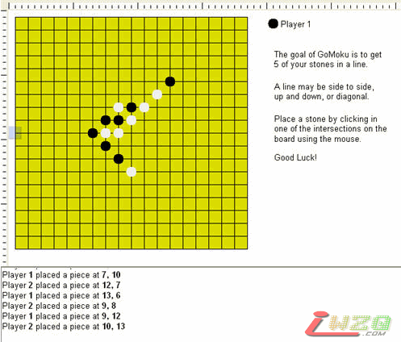

KPL游戏示例讲解[五子棋]
#1 KPL游戏示例讲解[五子棋] 作者：有志青年 发表时间：2007-4-24 9:43:06
代码：gomoku.kpl
位置：KPL Programs的Games下
关键词：综合
级别：中级
适合学龄：初中以上
运行效果：

代码讲解：
（1）我们先看在Main里面，棋盘是如何创建的
Board = CreateBoard()
DrawBoard()
棋盘的自定义数据结构，在程序的开头部分：
Structure GameBoard
X As Int //棋盘座标
Y As Int
CellWidth As Int //格子宽度
CellHeight As Int //格子高度
Size As Int //棋盘大小，纵横19（本例）
Positions As Int[] //可变数组
End Structure
//初始化棋盘数据
Function CreateBoard() As GameBoard
Define Board As GameBoard
Define Positions As Int[ BoardSize * BoardSize ] //动态定义数组大小，本例为19×19
Board.X = 10
Board.Y = 10
Board.CellWidth = 20
Board.CellHeight = 20
Board.Size = BoardSize
Board.Positions = Positions
Return Board
End Function
#2 Re:KPL游戏示例讲解[五子棋] 作者：有志青年 发表时间：2007-4-24 9:44:29
//绘制棋盘
Method DrawBoard()
Define I As Int
Define Width As Int = (Board.Size - 1) * Board.CellWidth
Define Height As Int = (Board.Size - 1) * Board.CellHeight
//用黄颜色绘制棋盘背景
ClearRectRGB( Board.X, Board.Y, Height, Width, 220, 220, 0 )
//换成黑色画线
Color( Black )
//画水平线
For I = 0 To Board.Size - 1
Pen( False )
MoveTo( Board.X, Board.Y + Board.CellHeight * I )
Pen( True )
MoveBy( Width, 0 )
Next
//画垂直线
For I = 0 To Board.Size - 1
Pen( False )
MoveTo( Board.X + Board.CellWidth * I, Board.Y )
Pen( True )
MoveBy( 0, Height )
Next
//屏幕重绘
RefreshScreen()
End Method
（2）游戏处理主要在相应鼠标事件的方法中完成：
SetMouseEvent( "OnMouseEvent" )
我们来看看OnMouseEvent是如何在鼠标移动时，定位棋格，又是如何让电脑自动下期并计算输赢的。
Method OnMouseEvent( EventName As String, X As Int, Y As Int, Button As Int )
//首先隐藏棋子定位的显示方块
HideSprite( "Cursor" )
//游戏已结束或轮到电脑下期时，不用执行下面代码
If IsGameOver Or CurrentPlayer 1 Then
Return
End If
//根据鼠标座标，返回定位的棋格
Define Offset As Int = Board.CellWidth / 2
Define CellX As Int = (X + Offset - Board.X) / Board.CellWidth + 1
Define CellY As Int = (Y + Offset - Board.Y) / Board.CellHeight + 1
#3 Re:KPL游戏示例讲解[五子棋] 作者：有志青年 发表时间：2007-4-24 9:44:57
//棋格位置，若不在规定的棋盘位置内，判为无效位置，同样返回，不做处理If Not IsValidPosition( CellX, CellY ) Then
Return
End If
//根据算出来的棋格位置，显示棋子定位的瞄准方块
MoveSpriteToPoint( "Cursor", (CellX - 1)* Board.CellWidth, (CellY - 1) * Board.CellHeight )
ShowSprite( "Cursor" )
RefreshScreen()
//如果没有按键，只是显示提示信息返回
If EventName "ButtonDown" Then
Status( "Mouse is over cell " + CellX + ", " + CellY )
Return
End If
//棋格上有棋子，不能再下
If GetPlayerAt( CellX, CellY ) 0 Then
PlaySound( "chord" )
Return
End If
//下棋并交换选手
MakeMove( CellX, CellY )
If IsGameOver True Then
//电脑选手走棋
MakeComputerMove()
End If
End Method
（3） 简单的五子棋规则判断就是“米”字型检查，这个规则比较简单，你可以自己定义一些禁忌，增加游戏的乐趣：
Function CheckForGameOver( x As Int, y As Int ) As Bool
Define Player As Int = GetPlayerAt( x, y )
If Player = 0 Then
Return False
End If
Define LineCount As Int
// 检查左上角到右下角
LineCount = GetLineCount( x, y, -1, -1 ) + GetLineCount( x, y, 1, 1 ) + 1
If LineCount >= 5 Then
DrawWinningLine( x, y, -1, -1 )
Return True
End If
//检查从左到右
LineCount = GetLineCount( x, y, -1, 0 ) + GetLineCount( x, y, 1, 0 ) + 1
If LineCount
#4 Re:KPL游戏示例讲解[五子棋] 作者：有志青年 发表时间：2007-4-24 9:45:17
//检查从左到右LineCount = GetLineCount( x, y, -1, 0 ) + GetLineCount( x, y, 1, 0 ) + 1
If LineCount >= 5 Then
DrawWinningLine( x, y, -1, 0 )
Return True
End If
// 检查从上到下
LineCount = GetLineCount( x, y, 0, -1 ) + GetLineCount( x, y, 0, 1 ) + 1
If LineCount >= 5 Then
DrawWinningLine( x, y, 0, -1 )
Return True
End If
// 检查从左下到右上
LineCount = GetLineCount( x, y, -1, 1 ) + GetLineCount( x, y, 1, -1 ) + 1
If LineCount >= 5 Then
DrawWinningLine( x, y, -1, 1 )
Return True
End If
Return False
End Function
（4） 电脑找到最容易连线的位置，并自动下棋：
Method MakeComputerMove()
If Not LastMoveX = -1 Then
DrawPlayer( LastMoveX, LastMoveY, 2 )
End If
Define X As Int
Define Y As Int
Define Score As Int = 0
Define MaxScore As Int = 0
Define MaxScoreX As Int
Define MaxScoreY As Int
Status( "The computer is thinking of the next move" )
//程序做了一个转换：棋子的每个点根据连线数，转换成相应的分值，这样，下一步棋的走法就很简单，用双循环，找到可使连线得分最高的那个位置点
For Y = MinY To MaxY
For X = MinX To MaxX
If IsValidPosition( X, Y ) And GetPlayerAt( x, y ) = 0 Then
Score = GetScoreForPosition( X, Y, 2 )
Score = Score
#5 Re:KPL游戏示例讲解[五子棋] 作者：有志青年 发表时间：2007-4-24 9:45:37
//程序做了一个转换：棋子的每个点根据连线数，转换成相应的分值，这样，下一步棋的走法就很简单，用双循环，找到可使连线得分最高的那个位置点For Y = MinY To MaxY
For X = MinX To MaxX
If IsValidPosition( X, Y ) And GetPlayerAt( x, y ) = 0 Then
Score = GetScoreForPosition( X, Y, 2 )
Score = Score + GetScoreForPosition( X, Y, 1 )
//记录高分位置
If Score >= MaxScore Then
MaxScore = Score
MaxScoreX = X
MaxScoreY = Y
End If
End If
Next
Next
MakeMove( MaxScoreX, MaxScoreY )
End Method
（5） 在程序中:
ScoreLine()方法提供了分值的计算方法；
而GetScoreForPosition（）则算出空的目标位置周围相应的分值。
如果你理解这个有些障碍，又有什么关系呢，你可以用这个练习当一个游戏来玩上一阵，也没有关系。